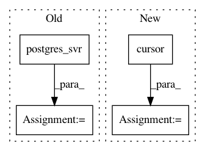

562b23c0561f57612773c5fdc4af22a75e71a03a,torcms/script/script_init_tabels.py,,run_migrate,#,57
Before Change
"""
try:
conn, cur = postgres_svr()
cur.execute("""alter table tabmember alter column user_name type character varying(255)""")
print(" Table TabMember altered successfully")
conn.commit()
except:
After Change
try:
conn = config.DB_CON
cur = conn.cursor()
cur.execute("""alter table tabmember alter column user_name type character varying(255)""")
print(" Table TabMember altered successfully")
conn.commit()
except:
In pattern: SUPERPATTERN
Frequency: 3
Non-data size: 4
Instances
Project Name: bukun/TorCMS
Commit Name: 562b23c0561f57612773c5fdc4af22a75e71a03a
Time: 2020-10-12
Author: bukun@osgeo.cn
File Name: torcms/script/script_init_tabels.py
Class Name:
Method Name: run_migrate
Project Name: bukun/TorCMS
Commit Name: 562b23c0561f57612773c5fdc4af22a75e71a03a
Time: 2020-10-12
Author: bukun@osgeo.cn
File Name: torcms/script/script_update.py
Class Name:
Method Name: echo_info
Project Name: bukun/TorCMS
Commit Name: 562b23c0561f57612773c5fdc4af22a75e71a03a
Time: 2020-10-12
Author: bukun@osgeo.cn
File Name: torcms/script/script_update.py
Class Name:
Method Name: update_view_count